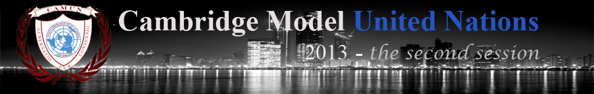

|  |
|---|
The theme for CAMUN '13, ‘Collaboration: A Nest for the Future’ is set with the backdrop of the celebration of 2013 as the ‘International Year of Water Cooperation.’ One out of five people in the world –1.4 billion– currently lives on US$1.25 or less a day and almost a billion go hungry everyday. The world is facing major and overlapping global crises – the economic and financial crisis, accelerating environmental degradation, water scarcity and pollution and the emerging impacts of a changing climate. All of these challenges impede efforts to eradicate poverty and achieve an equitable society. Water plays a fundamental role in any equitable socio-economic structure as it interacts with poverty, food security, health and so many other sustainable development issues. UNWATER estimates that, by 2030, global demand for water could outstrip supply by over 40% if no changes are made. The growing demands placed on our supply of water are not merely the result of the world’s growing population, but the way in which our economies have developed. Since 1900, our consumption of water for human use has grown at twice the level of the population growth, jumping from 600 billion cubic meters in 1900 to 4,500 billion cubic meters in 2010. Many of the problems we are now encountering in our use of water are economic, social and political in character. This means that it is within our power to change the structures governing water use and prepare more intelligently for our current and future needs. As these issues are complex and involve nearly all sectors of our economy, society and government, the need for collaboration between people, communities and nations is vital to the betterment and progress of our world. It is important that we as individuals interact amongst ourselves, share ideas and co-operate with each other in order to create better solutions and accomplish goals that aim to enrich, sustain and make mankind flourish. Co-operation, compromise, communication and responsibility are the pillars of effective collaboration. They help create a sense of faith in each other and help us head towards a common destiny. Ergo, CAMUN2013 presents an opportunity to create pathways for a safer, cleaner, greener and a more equitable and prosperous world for all. |
||
|---|---|---|
| Developed by: Mohammed Mehraj | Designed by: Ritvik Sinha | |
Connect with CAMUN |
|